SEO는 콘텐츠와 기술, 두 축이에요
게스트는 헤일로X(HaloX)라는 SEO·GEO 솔루션을 혼자 만들고 있는 이재철 대표예요. 퍼포먼스, SEO, 그로스, CRM처럼 데이터를 바탕으로 하는 마케팅을 오래 해 왔어요.
SEO가 뭔가요?
SEO는 Search Engine Optimization의 약자예요. 누군가 구글이나 네이버에서 특정 키워드를 검색했을 때 내 제품이 위쪽에 뜨도록 다듬는 일이에요. 광고비는 들지 않아요. 대신 시간과 노력이 들어요. 그래서 이 대표는 시간은 있고 돈은 적은 1인 창업자에게 가장 잘 맞는 마케팅이라고 봐요.
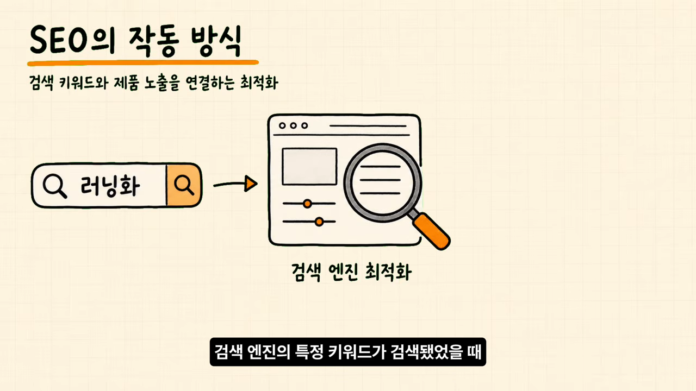
콘텐츠만으로는 반쪽이에요
블로그 글을 오래 쌓으면 그 주제에 대한 사이트의 신뢰와 권위가 생겨요. 이게 콘텐츠 SEO예요. 그런데 구글이 사이트를 노출하기까지는 단계가 있어요. 구글 봇이 사이트에 찾아와 읽고(크롤링), 내용을 정리해 두고(색인), 어떤 키워드에 보여 줄지 순위를 매겨요(랭킹).
콘텐츠는 이 중 '무엇을 색인시킬까'를 다뤄요. 봇이 어떻게 들어와서 사이트를 이해할지는 비어 있죠. 그 빈자리를 채우는 게 테크니컬 SEO예요. 둘 다 잘돼야 순위가 올라가요.
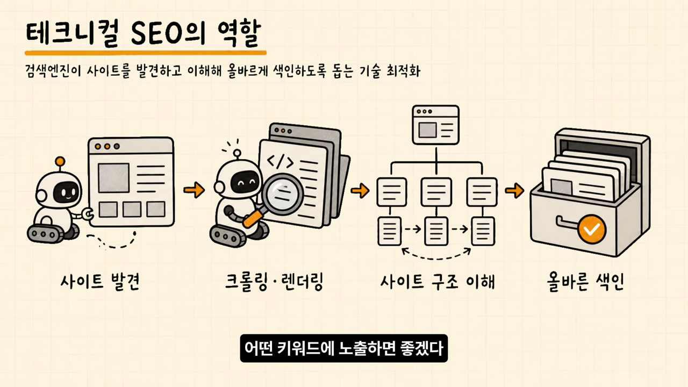
이 대표가 꼽은 테크니컬 SEO의 예는 이래요. 사이트 속도가 빨라야 하고, 사람 눈에는 안 보이지만 봇이 읽는 메타 정보(타이틀, 디스크립션)와 스키마 정보가 갖춰져야 해요. URL 구조도 여기에 들어가요.
B2B라면 구글부터
국내 검색은 네이버와 구글이 양강이에요. 하지만 이 대표는 전문성이 높은 B2B 분야에서는 구글 검색 비중이 훨씬 높다고 봐요. 업계 사람들이 전문 정보를 구글에서 찾기 때문이에요. 그래서 B2B 회사라면 구글에 맞춰 최적화하는 게 낫다는 결론이에요.
GEO는 SEO 위에 서 있어요
GEO는 Generative Engine Optimization의 약자예요. 사람들이 정보를 찾고 비교하는 곳이 구글·네이버에서 GPT, Claude, Perplexity 같은 LLM으로 옮겨 가고 있어요. 그러면 브랜드는 'GPT 답변 안에도 우리 이름이 나왔으면' 하고 바라게 되죠. SEO가 구글 알고리즘을 이해해서 상위에 오르는 전략이었다면, GEO는 'GPT는 왜 이렇게 답했을까'를 거꾸로 풀어 보는 전략이에요.
AI도 결국 구글처럼 찾아요
이 대표는 GEO가 결국 SEO와 맞닿아 있다고 말해요. GPT, Gemini, Perplexity, Claude도 질문에 답할 재료를 검색으로 가져와요. 그 흐름이 구글의 크롤링·색인·랭킹과 같고, 결과도 구글과 생각보다 많이 겹친대요.
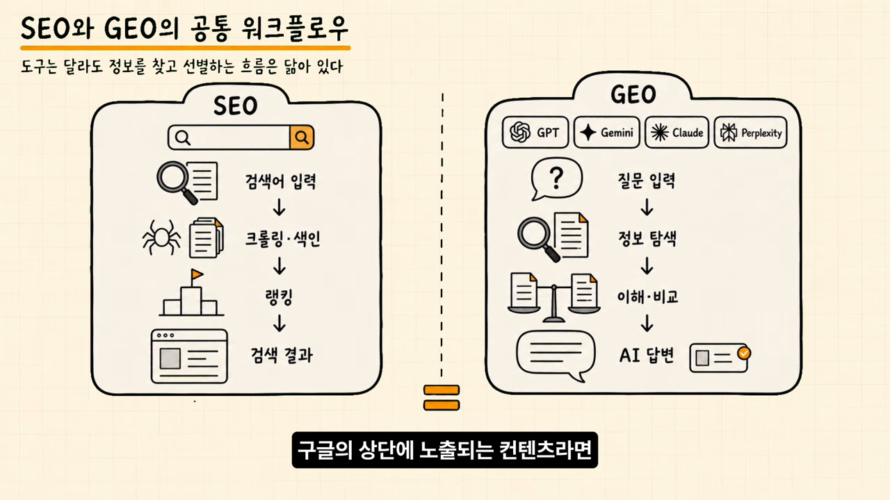
그동안 여러 실험으로 드러난 경향은 하나예요. 구글 상단에 뜨는 콘텐츠가 GPT에도 뜰 확률이 높아요. 사람들이 어떤 키워드에서 무엇을 원하는지는 구글이 이미 오랫동안 알고리즘으로 다듬어 놨어요. GPT가 이걸 벗어나 새 알고리즘을 짜기는 어렵다는 거예요. 물론 앞으로 바뀔 수는 있다고 덧붙여요. 그래서 GEO도 SEO 관점에서 시작하라는 게 이 대표의 방향이에요.
콘텐츠만 쌓으면 되겠지?
많은 회사가 하는 실수예요. 'AX 정의'를 검색해서 어떤 사이트에 들어갔는데, AX 글은 하나뿐이고 나머지가 다 보험 글이라면 어떨까요? 진행자 말대로 '검색에 걸리려고 해 놨구나' 싶어서 신뢰가 확 떨어지죠. 이 대표는 사람이 느끼는 이 감각을 구글도, GPT도 똑같이 느낀다고 해요.
글을 많이 내는 것과 한 주제에 권위를 갖는 건 다른 문제예요. GPT나 Claude로 글을 찍어내기는 쉬워졌지만, 전략이 없으면 원하는 키워드를 차지하지 못해요.
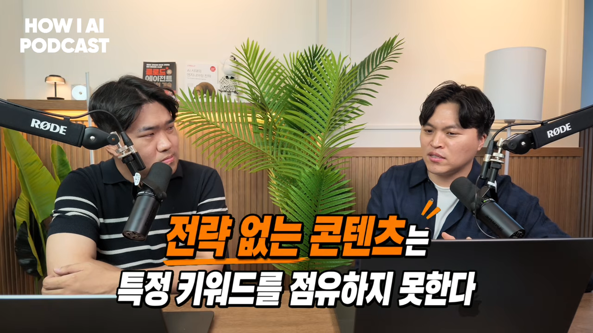
실제 사이트 진단: 검색 결과의 첫인상
2부에서는 진행자 회사인 조슈아앤컴퍼니 사이트를 직접 진단했어요. 진단 전에 짚은 팁이 하나 있어요. 구글과 GPT는 사람마다 결과를 다르게 보여 줘요. 그래서 순위를 모니터링할 땐 게스트 모드처럼 개인화가 빠진 창에서 보라고 해요.
파비콘과 AI 문체
첫 지적은 검색 결과 옆에 회사 로고, 즉 파비콘이 없다는 점이에요. 파비콘이 있으면 신뢰가 생기고, 없으면 바로 신뢰가 떨어진대요.
두 번째는 글에서 AI 티가 난다는 점이에요. 이 대표는 사이트 문장을 보고 Claude로 만들었다는 걸 바로 알아챘어요. Claude 글의 큰 특징이 엠 대시(—)라는 거예요. AI 글을 많이 볼수록 이런 게 눈에 걸린대요. 앞으로의 독자에겐 AI가 쓴 글보다 사람이 쓴 글이 더 믿음을 줄 거라고 봐요.
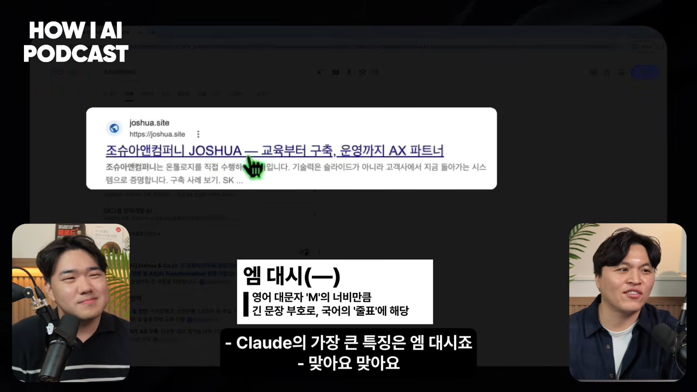
AI 오버뷰는 어떻게 만들어지나요
회사 이름을 검색하니 구글 상단에 AI 오버뷰가 떴어요. 이 대표는 이 영역을 SEO와 GEO 사이에 있다고 설명해요. 요즘은 AEO(Answer Engine Optimization, 답변 엔진 최적화)라고도 불러요.
AI는 여러 사이트에서 정보를 가져와 문장을 만들어요. 이렇게 가져온 사이트를 '소스', 문장에 출처로 붙는 걸 '인용'이라고 해요. 그래서 AI 오버뷰를 노린다면 거기 나온 사이트들이 어떤 순서로 나왔는지, 구글 톱10에 있는지, 왜 뽑혔는지를 따져 봐야 해요.
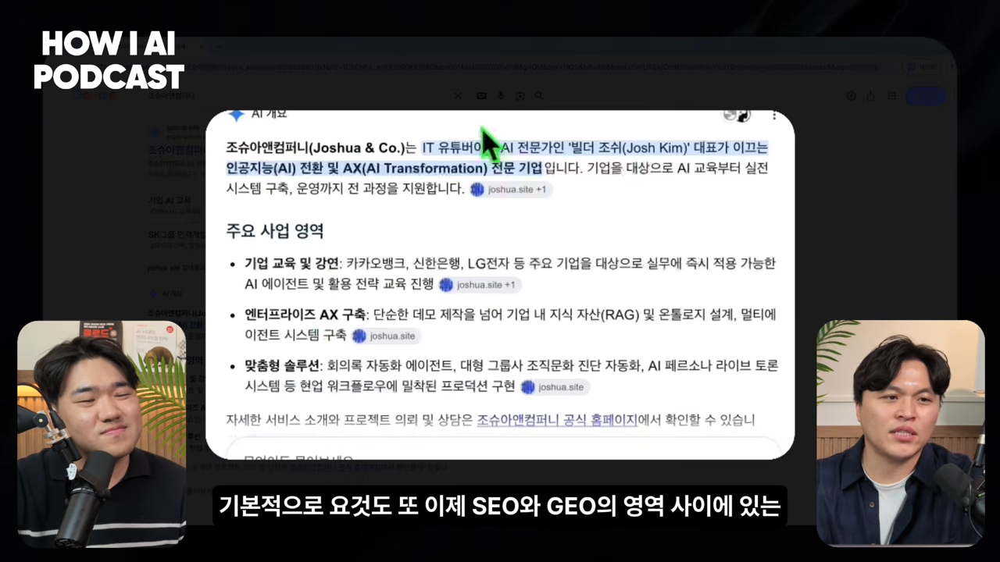
사이트 이름이 도메인으로 떠요
검색 결과의 사이트 이름 자리에 회사 이름 대신 'joshua.site'가 떴어요. 진행자도 의도한 게 아니었어요. 사이트 이름 설정이 빠진 거예요.
타이틀, 디스크립션, 그 아래 하위 링크가 어떻게 보일지는 구글이 판단해요. 하지만 JSON-LD 같은 형식으로 스키마 정보가 잘 갖춰져 있으면 원하는 모습에 가깝게 나와요. 이런 게 다 테크니컬 영역이에요.
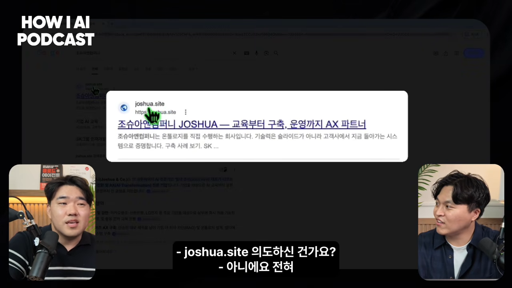
AI에게 맡기면 끝일까요?
진행자는 사이트를 Claude Code로 만들었고, SEO 최적화도 한 번 시켜 봤대요. 결과는 보신 대로예요. 이 대표는 요즘 AI에게 SEO를 맡기면 해 주는 것처럼 보이지만, 아무리 밀어붙여도 디테일은 결국 놓친다고 해요.
봇의 눈으로 사이트 구조 점검하기
이 대표는 사이트를 빠르게 훑을 때 크롬 확장 프로그램 'SEO META in 1 CLICK'을 즐겨 써요. 비슷한 확장 프로그램이 많으니 하나 골라 쓰면 된다고 해요. 진단에서 본 항목을 정리하면 이래요.
| 점검 항목 | 무엇을 보나요 | 진행자 사이트는? |
|---|---|---|
| 타이틀·디스크립션 | 검색 결과에 어떤 문구로 노출되는지 | 들어가 있어요 |
| 제목 위계(H1·H2·H3) | 대제목·중제목·소제목이 의도대로 짜였는지 | 의도와 맞는지 확인이 필요해요 |
| robots.txt | 어떤 봇이 들어와도 되고 어디는 안 되는지 | 모든 봇을 다 받아요 |
| 사이트맵 | URL 목록, 최신 수정일, 우선순위 | 잘 돼 있는 편이에요 |
| URL 구조 | 경로 단위로 정보가 묶였는지 | 깔끔해요. 블로그는 아직 없어요 |
| 이미지 alt 텍스트 | 이미지가 어떤 키워드와 이어지는지 | 고객사 이름만 적혀 있어요 |
타이틀과 디스크립션
확장 프로그램을 열면 타이틀과 디스크립션 같은 메타 정보가 바로 보여요. 검색 결과에 뜬 문구가 여기서 왔는지 비교해 보면, 사이트 정보가 구글과 AI에 어떻게 노출되는지 한 번에 파악할 수 있어요.
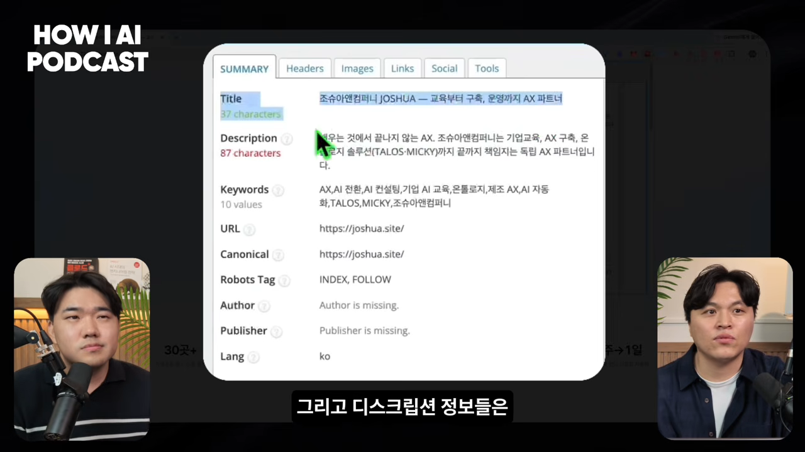
제목 위계
봇은 H1, H2, H3 태그로 정보의 위계를 이해해요. 말 그대로 대제목, 중제목, 소제목이에요. 그래서 중제목으로 읽혀야 할 문장이 정말 H2로 되어 있는지 확인해야 해요. 많은 사람이 놓치는 부분이래요.
robots.txt는 대문, 사이트맵은 지도
사이트에 들어와 판단하는 건 사람이 아니라 구글 봇, GPT 봇, Claude 봇이에요. robots.txt는 이 봇들에게 '여긴 봐도 되고 여긴 보지 마'라고 밝혀 두는 문서예요. 이 대표는 사이트의 대문이라고 불러요.
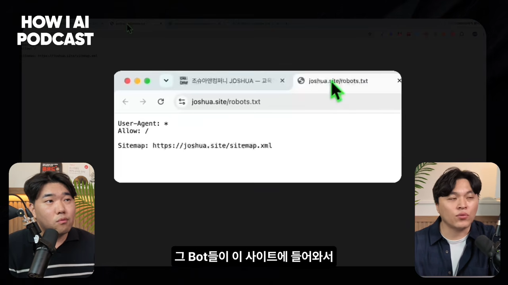
진행자 사이트는 '모든 봇 환영' 상태였어요. 이게 좋은지 나쁜지는 운영자가 판단할 일이에요. 다만 봇은 생각보다 트래픽을 많이 가져가요. 그래서 링크드인처럼 필요 없는 봇은 막고, 들어온 봇에게도 불필요한 경로는 막아 두는 곳도 있어요. 이 대표는 이걸 트래픽 최적화에 가깝다고 봐요.
대문을 통과한 봇에게 길을 알려 주는 게 사이트맵이에요. 사이트의 URL이 무엇인지, 언제 최신으로 바뀌었는지, 우선순위가 어떤지를 적어 둔 지도예요.
URL 구조와 alt 텍스트
사이트 정보는 URL 경로 단위로 묶이는 게 기본이에요. 진행자 사이트는 워크, 에듀케이션, 솔루션처럼 경로가 깔끔하게 나뉘어 있었어요. 블로그는 아직 없고, 인블로그로 만들 생각이래요. 그러면 사이트에서 블로그로 넘어가는 링크를 꼭 걸어 두라고 해요.
alt 텍스트에서는 고객사 로고를 짚었어요. 삼성 로고 이미지의 alt 텍스트가 '삼성'뿐이었어요. 그러면 이 이미지는 '삼성' 검색과 이어져요. 그런데 진행자가 노출되고 싶은 건 자기 회사 이름이죠. 그래서 회사 이름이 함께 들어가야 한다는 거예요. 이 대표는 SEO를 '디테일의 싸움'이라고 표현해요.
키워드 고르기와 고객의 검색 여정
진행자 회사는 여러 분야를 넓게 다뤄 왔지만, 앞으로는 제조업 중심의 '산업 AX'에 집중하려고 해요. 그럼 어떤 키워드로 시작해서 어디로 넓혀 가야 할까요? 이 대표는 '제조 AX'를 직접 검색하며 순서를 보여 줬어요.
- AI 오버뷰가 있는지 봐요. 있다면 어떤 도메인이 노출되는지 확인해요.
- 경쟁 강도를 가늠해요. 우리가 비집고 들어갈 수 있는 자리인지 판단해요.
- 관련 키워드로 검색 여정을 그려요. 사람들이 이 주제를 어떤 순서로 찾아 나가는지 지도를 그려 봐요.
고객의 검색 여정
사람은 정보를 얻을 때 단계를 밟아요. 먼저 뜻을 이해하고, 하는 곳을 찾아보고, 비교하고, 추천을 받고, 결정해요. 제조 AX라면 '제조 AX가 뭐지?'에서 시작해 '사례는 뭐가 있지?', '하는 곳은 어디지?', '도와줄 컨설팅은?', '어디가 좋아?'로 이어져요.
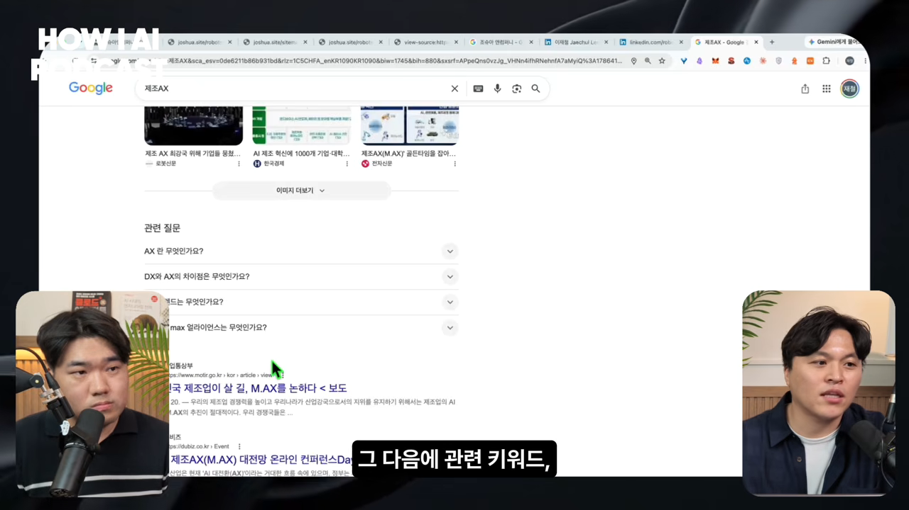
PAA가 콘텐츠 목록이 돼요
요즘 검색은 단어보다 자연어 질문으로 바뀌고 있어요. 구글에서는 일부 키워드에 PAA 영역이 떠요. 사람들이 이 키워드와 함께 실제로 묻는 질문이 모여 있는 곳이에요. 제조 AX에서는 'AX란 무엇인가요?', 'DX와 AX의 차이는?', 'AX 트렌드는?' 같은 질문이 보였어요.
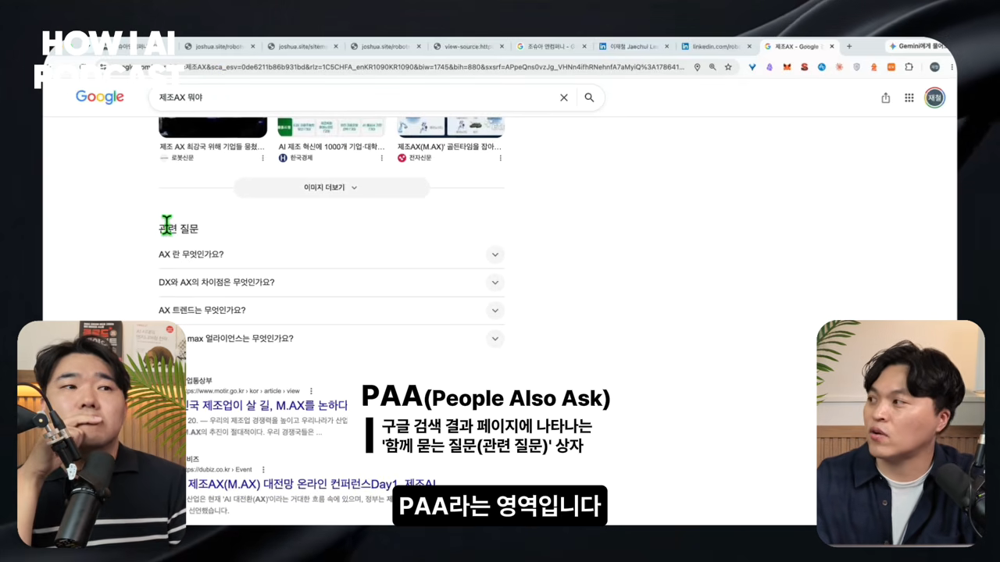
진행자가 바로 정리했어요. 이 질문들에 답하는 글이 우리 사이트에 있으면 돼요. 키워드는 곧 트래픽이에요. 질문에 맞는 콘텐츠로 사람을 데려오고, 신뢰를 주는 사이트가 받쳐 주면 리드가 들어와요. 이 대표도 정확히 그거라고 답했어요.
렌더링 구조와 사이트 진단 점수
앞의 과정을 손으로 하면 금방 한계가 와요. 모니터링할 키워드도, 찾아야 할 질문도 수십·수백 개예요. 페이지도 하나가 아니라서 전부 점검해야 하죠. 이걸 한 번에 하려고 이 대표가 만든 게 헤일로X예요.
진행자가 놀란 점은 이 상용 SaaS를 Lovable로 만들었다는 거예요. 이 대표는 Lovable 앰배서더로 활동하고 있어서, 서비스를 만들 때 Lovable을 최대한 써 본대요.
테크니컬 SEO를 한 번에 점검해요
헤일로X는 앞에서 하나씩 본 항목을 한꺼번에 점검해요. 타이틀, 디스크립션, H1, canonical, 깨진 링크, 중복 콘텐츠, robots.txt가 있는지와 제대로 쓰였는지, 사이트맵 구조에 문제가 없는지까지 봐요.
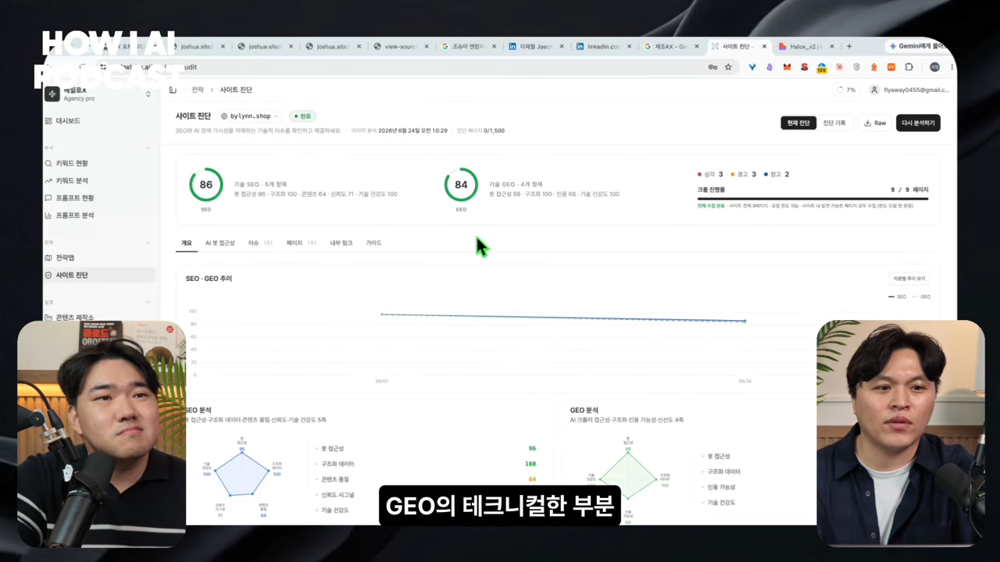
GEO에서 특히 예민한 렌더링 구조
GEO가 SEO와 다른 점 하나가 렌더링 구조예요. 웹사이트는 크게 두 방식으로 화면을 만들어요. 서버에서 완성된 HTML을 보내는 SSR, 그리고 빈 틀을 보낸 뒤 브라우저에서 그려 내는 CSR이에요.
사람은 로딩을 기다렸다가 다 봐요. 구글 봇도 방식과 상관없이 기다렸다가 결국 다 가져가요. 그런데 다른 봇은 안 기다리거나, 기다려도 못 받아 갈 수 있어요. 이 대표 설명으로는 GPT 봇이 특히 그래요. SSR이면 가져가지만 CSR이면 사이트에 들어와도 아무 정보도 못 본대요.
| 렌더링 방식 | 사람 | 구글 봇 | GPT 봇 |
|---|---|---|---|
| SSR | 다 봐요 | 가져가요 | 가져가요 |
| CSR | 다 봐요 | 기다렸다가 가져가요 | 못 가져갈 수 있어요 |
CSR은 개발이 편한 대신, 봇에게 정보가 늦게 가거나 아예 안 갈 수 있다는 부작용이 있어요. 같은 SSR이라도 Suspense SSR처럼 정보를 늦게, 다른 순서로 보내면 GPT가 못 받는 경우가 있대요. 헤일로X는 이런 렌더링 유형을 구분해서, 봇이 정보를 가져갈 수 있는지와 몇 퍼센트나 가져갔는지를 보여 줘요.
커머스는 어떻게 하나요
커머스는 상품 정보를 대개 클라이언트에서 불러와요. SSR만으로 짓기 어렵대요. 게다가 상세 페이지가 이미지와 영상 위주라 AI가 그대로 읽고 이해하지 못해요. 그래서 요즘 커머스는 상세 정보를 텍스트로 쌓는 방법을 고민해요. 배경만 이미지로 두고, 내용은 HTML과 CSS 텍스트로 얹어 이미지처럼 보이게 만드는 곳도 있대요.
점수는 '전보다 나아졌나'로 봐요
진단 점수는 구글이 만든 기준처럼 SEO에서 오래 써 온 항목을 빌려 매겨요. 봇 접근성, 구조화 데이터와 스키마, 타이틀·메타 정보, 사이트 속도 같은 것들이에요. 페이지 단위로도 CSR인지 SSR인지, 타이틀·디스크립션·스키마가 있는지 볼 수 있어요.
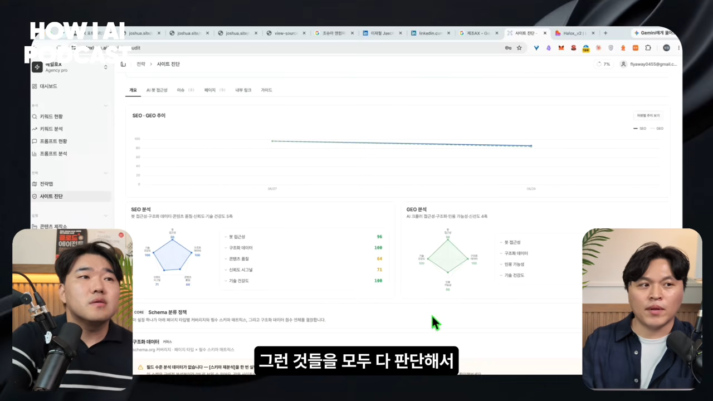
그럼 70점, 86점은 좋은 걸까요? 이 대표는 절대적인 기준은 없다고 답해요. 지금 점수를 기준으로 잡고, 고친 뒤 점수가 오르는지 추적하는 게 맞는 방향이래요.
키워드 땅따먹기와 AI 답변 모니터링
'제조 AX'처럼 키워드가 많아지면 모두 지켜봐야 해요. 헤일로X는 키워드마다 이런 걸 보여 줘요.
- 우리 사이트와 경쟁사가 몇 등인지
- AI 오버뷰가 있는지, 있다면 우리나 경쟁사가 들어갔는지
- 검색량과 트렌드, 검색 의도
- 연관 키워드가 있는지, 무엇인지
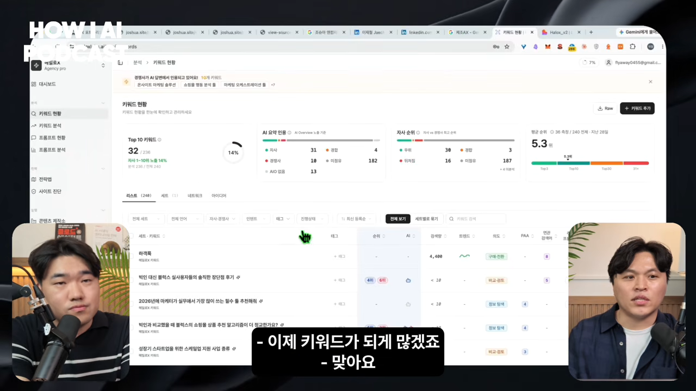
진행자는 이걸 보고 다음 콘텐츠를 무엇으로 만들지 전략을 세울 수 있겠다고 반응했어요.
키워드 땅따먹기
키워드는 연관 키워드와 이어져 있어요. 그래서 고객 여정 지도를 네트워크로 그리면, 어디서 이기고 어디서 지고 있는지 한눈에 보여요. 데모에서는 이미 차지한 키워드, 경합 중인 키워드가 색으로 나뉘었어요.
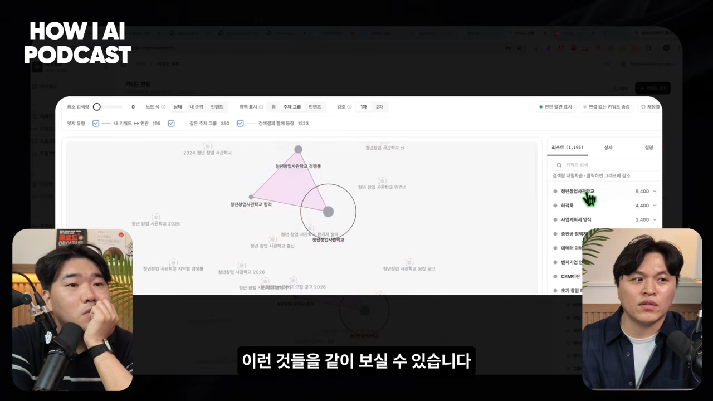
'CRM 마케팅 성공 사례'처럼 큰 키워드는 바로 차지하기 어려워요. 그럴 땐 주변의 연관 키워드부터 먹고 들어가요. 1차 연관 키워드도 크면 2차 연관 키워드까지 넓혀서 다시 시작해요. 진행자는 이걸 '땅따먹기 전략'이라고 불렀어요.
왜 톱10인가요
헤일로X는 모니터링 중인 키워드 가운데 몇 개가 톱10에 있는지 먼저 보여 줘요. 이 대표는 AI 오버뷰에 오르는 것 중 약 60%가 톱10 검색 결과라고 말해요. 그래서 톱10이 첫 기준이고, 그다음 AI 요약에 인용됐는지, 우리 순위와 평균 순위는 어떤지를 보며 차근차근 고쳐 나가요.
AI 답변에서는 세 가지를 봐요
구글 말고 GPT, Gemini, Perplexity, Claude의 답변도 지켜봐요. 질문을 던지면 답변이 나오고, 그 안에 소스와 인용이 있어요. 이 대표는 답변 속 우리 브랜드의 모습을 세 가지로 나눠 봐요.
| 구분 | 뜻 |
|---|---|
| 멘션(M) | 답변 문장 안에 우리 브랜드가 언급돼요 |
| 소스(S) | 답변을 만드는 재료로 우리 사이트 정보가 쓰여요 |
| 인용(C) | 신뢰도가 높고 도메인 권위가 높다고 판단돼 문장 끝에 우리 URL이 붙어요 |
멘션됐다면 경쟁사보다 몇 번째로 추천되는지도 봐요. 재미있는 건 엔진마다 인용하는 매체가 다르다는 점이에요. 예를 들어 허브스팟이나 위키피디아가 잘 인용된다면, 위키피디아에 브랜드를 올리는 전략을 세워 볼 수 있어요.
AI가 좋아하는 콘텐츠 만들기
어떤 키워드를 점유할지 정했다면, SEO든 GEO든 결국 콘텐츠가 필요해요. 이 대표는 콘텐츠를 만들기 전에 이렇게 준비해요.
- 그 키워드의 지금 순위, 경쟁사, 검색량, 경쟁 정도를 확인해요.
- 검색 결과에 어떤 도메인과 타이틀·디스크립션이 나오는지, AI 요약은 어떻게 나오는지 봐요.
- 상위 URL의 형식을 보고 가이드형, 리뷰형, 비교형, 하우투형 중 무엇이 맞을지 정해요.
- 검색하는 사람이 느끼는 페인포인트를 콘텐츠의 단서로 삼아요.
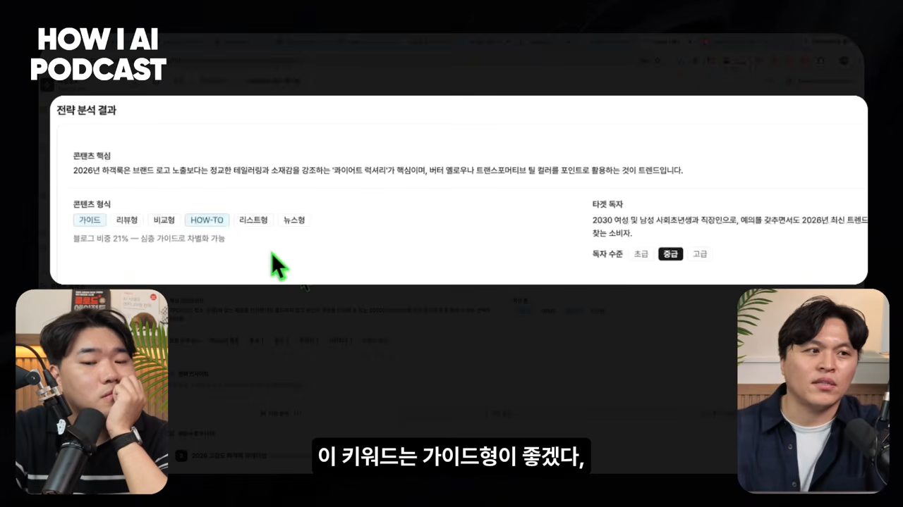
목차는 질문에 답하는 모양으로
제목과 디스크립션, 다른 콘텐츠와의 차별점도 정해요. 이 대표는 AI와 구글이 통계 숫자를 좋아한다고 해요. 그래서 전문성과 권위를 보여 줄 통계나 인용 근거가 있는지도 챙겨요.
목차는 특히 중요하대요. 가장 좋은 목차는 질문에 대한 답이 되는 목차예요. 상위 결과의 타이틀·디스크립션에서 반복되는 문장을 빌려 오는 것도 좋아요. 그래서 SERP와 AI 오버뷰, PAA 질문까지 목차가 덮고 있는지를 보며 짜요.
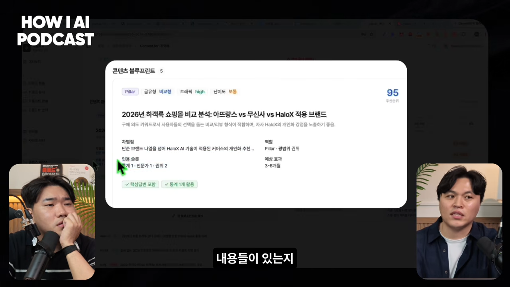
제품을 녹이는 방식
내 제품이 있다면 콘텐츠에 녹여야 하죠. 이 대표는 GPT가 중립성을 좋아해서 비교 콘텐츠가 좋다고 말해요. 균형 있게 쓸지, 자사 중심으로 쓸지, 제품을 표로 보여 줄지, 끝에 짧게만 넣을지도 고를 수 있어요.
AI가 좋아하는 도메인과 문장
이 대표는 AI가 좋아하는 도메인과 문장이 따로 있다고 봐요. 헤일로X는 그런 도메인과 문장을 모아 뒀다가 콘텐츠를 쓸 때 활용해요. 이미 AI가 좋아하는 재료로 쓰니 노출될 확률이 더 높다는 논리예요. 여기에 회사가 오래 써 온 글 스타일을 페르소나로 만들어 얹고, 추가 맥락을 더해 초안을 만들어요.
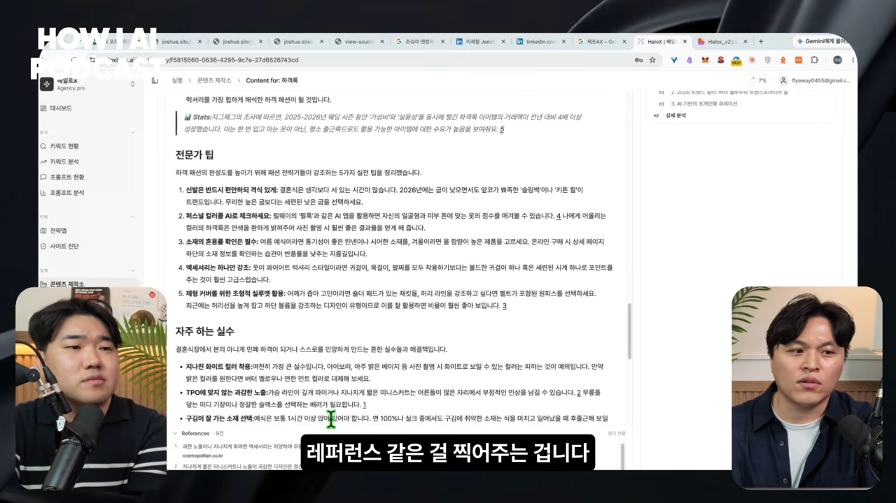
진행자는 이 대표가 마케팅에 과학적으로 접근한다고 평했어요. 이 대표도 숫자와 원리를 좋아해서 SEO가 잘 맞는 분야라고 답했어요. 다만 이런 도구는 SEO 기술 지식이 어느 정도 있어야 제대로 쓸 수 있다고 덧붙였어요.
작은 팀은 마케팅 자원을 어떻게 나눌까요?
진행자 회사엔 콘텐츠 마케터가 따로 없어요. 퍼포먼스 마케팅도, CRM도, SEO도 다 해야 할 것 같은데 자원은 한정돼 있죠. 어떻게 나눠야 할까요?
이 대표는 사이트 상태나 브랜드 단계에 따라 다르다고 전제한 뒤, 마케팅을 두 갈래로 나눠요.
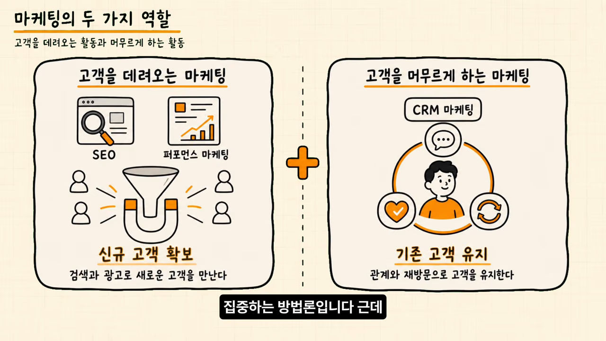
| 구분 | 하는 일 | 방법 |
|---|---|---|
| 데려오는 마케팅 | 새 고객을 사이트로 데려와요 | SEO, 퍼포먼스 마케팅 |
| 머무르게 하는 마케팅 | 들어온 고객이 떠나지 않게 해요 | CRM 마케팅 |
고객을 어느 정도 데려온 뒤, 그들이 머무는지 보면서 사이트를 고쳐 나가야 해요. 그래서 두 가지는 계속 번갈아 돌아가요.
SEO는 성과가 보이기까지 짧으면 한두 달, 길면 6개월이 걸리는 큰 작업이에요. 그래서 SEO는 처음부터 시작해 두되, 빨리 성과를 보고 판단해야 한다면 퍼포먼스로 트래픽을 붓고 CRM으로 이탈을 막는 일을 함께 하라고 해요.
마지막으로 이 대표는 한국의 SEO·GEO 시장이 해외보다 확실히 뒤처져 있다고 말해요. 다른 마케팅보다 관심이 덜했는데, GEO가 떠오르면서 관심이 커지고 있대요. 이 분야에 뛰어드는 사람이 더 많아지길 바란다는 말로 마무리했어요.